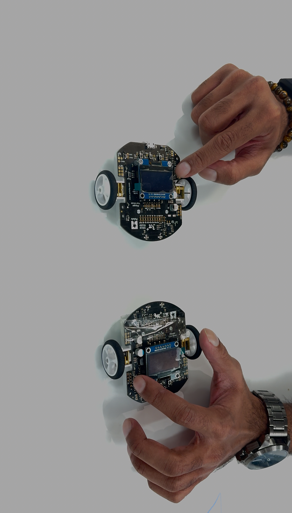

Pololu 3pi+ Robot Disaster Management Simulation
In this project, I’ve programmed the Pololu 3pi+ robot using the Arduino IDE to simulate a disaster management scenario. The robot’s mission is to locate magnets, which represent injured individuals, and follow a predefined workflow to indicate their positions.
Key Tasks
- Task 1: The robot starts from its home position and navigates to the search zone on the right side of the map. It searches for a magnet in this area.
- Task 2: Once the robot detects a magnet at a random location (simulated by a dice roll), it returns to its home position. It then alerts the user and navigates back to the magnet’s location.
- Task 3: This task repeats Task 2 to ensure consistency and repeatability.
The robot’s primary objective is to locate injured individuals (magnets) in disaster zones and promptly return to alert rescue teams. Additionally, it marks the location of each magnet for further action.
Hardware:
- Pololu 3pi+ robot.
- Magnet to simulate injured individuals.
- Batteries and a pre-defined map for navigation.
Software:
- Arduino IDE: The Pololu 3pi+ controller is based on Arduino Leonardo.
- Core Scripts:
- pid.h: Implements smooth control using a PID algorithm for precise navigation.
- magnetometer.h: Initializes the magnetometer to detect magnetic fields in the search zone.
- kinematics.h: Localizes the robot’s position and orientation within the map.
- motors.h: Initializes and controls motor speeds to ensure smooth movement.
- encoders.h: Provides a subset of kinematics for accurate localization and distance tracking.
This project showcases how compact robotic platforms, such as the Pololu 3pi+, can be scaled and utilized in disaster management scenarios to offer precise search, localization, and alerting functionalities. Special thanks to Paul O'Dowd for formulating a scalable application.
Resources
